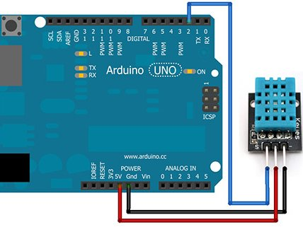
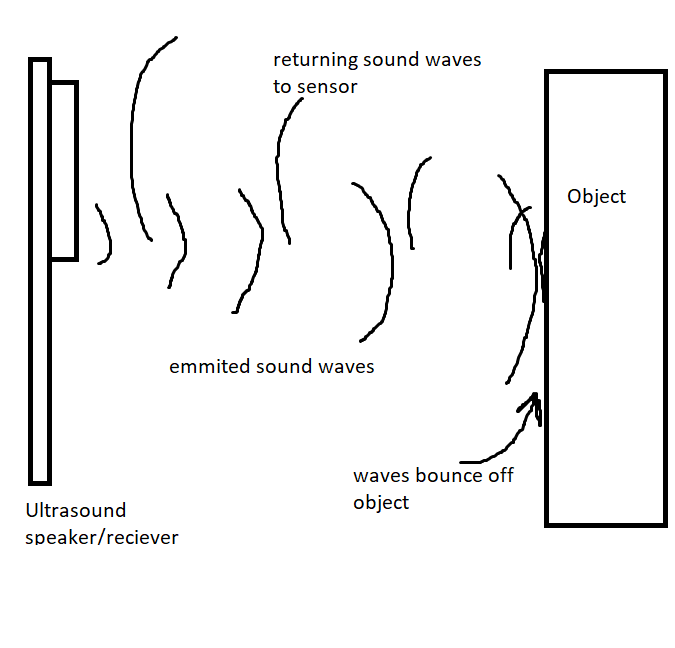

How to get started with Engineering | Sensors & Actuators
One of the main applications of an Arduino board is by utilizing various sensors, actuators, and other devices
Common Sensors
Below are simple introductions to simple/common sensors for Arduino. These usually don’t require extra software (a library) to operate.
Photosensors
Or sometimes called, photoresistors, these are electronic components that will change their electrical resistance based off how many photons hit its sensitive surface. I have talked about this sensor in my report in this previous lesson, and I hope you go back to that and review!
Basically, this is a sensor that is made up of specific materials that have semi-conductive properties. At its normal state, it will have some resistance to electrical flow. However, when photons hit its sensitive service, they will make electrons change energy states, either allowing more or less resistance.
Below is a super short script that will show you how to use this:
void setup() {
Serial.begin(9600);
Serial.println("Let's begin!");
}
void loop() {
int value = analogRead(A2); //read value (voltage potential) from Analog Pin 2
Serial.println(value);
delay(50);
}
To hook it up, just connect one end of the photoresistor to ground and the other end to Analog Pin 2.
And once you compile the script, you can experiment by putting your hand over the sensor and observing how the values change from the Serial Monitor.
Touch Sensors
There are multiple different modules you can buy for a touch sensor, but these are a waste of money as a simple wire can be a touch sensor. I have detailed how to build a touch sensor in this lesson. Please go back to that lesson and build that circuit at the end.
However, in that post I used just electronic components. But how can we use arduino with this?
Well, once you build that circuit on your breadboard, all we have to do to measure the output, is connect the output of the transistor to an Arduino Analog Pin. Pick any you would like, and you can run the code below:
void setup() {
Serial.being(9600);
}
void loop() {
int v = analogRead(A3); //read Analog Pin 3, or anyother pin you choose
Serial.println(v);
delay(10);
}
Library - Sensors
These are sensors that may require a library to some extra knowlegde to operate.
Temperature and Humidity
Let’s say you are gardening plants in a greenhouse and you need an automated way to collect the temperature and humidity, how will you accomplish this? Well, you can use this module. There should be a temperature sensor in the Elegoo Kit, which you can follow along with.
In this sensor, there are three main pins: ground, power, and an output pin.
Connect the power pin and ground to 5v and ground on your arduino, respectively. Then, connect the output pin to a digital pin on the Arduino:

Then, to use this we will use a library provided by the producers to help us out:
#include <dht.h> //this is how you include a library in Arduino
dht DHT;
#define DHT11_PIN 2
void setup(){
Serial.being(9600);
}
void loop() {
int value = DHT.read11(DHT11_PIN);
Serial.print("Temperature: ");
Serial.print(DHT.temperature);
Serial.println((char)223);
Serial.print("Humidity: ");
Serial.print(DHT.humidity);
Serial.println("%");
delay(500);
}
Let’s walk through how this code works. First, we include the dht library in the first line. Then we create a dht object, named DHT, and define the pin which it’s connected to Digital Pin 2. Once we initialize the Serial connection in setup, we read the value from our defined pin variable and put that value into an integer. But to get our actual temperature and humidity values, we need to reference them from the built in dht class; they are set in the temperature and humidity values. Finally, we print them out twice every second (or once every .5 seconds).
Below is the range/accuracy for the DHT sensor:
- Humidity Range: 20-90% RH
- Humidity Accuracy: ±5% RH
- Temperature Range: 0-50 °C
- Temperature Accuracy: ±2% °C
- Operating Voltage: 3V to 5.5V
This dht sensor measures relative humidity, which is basically the amount of water vapor in the air vs. the saturation point of water vapor in the air. This saturation point is when water vapor starts to condense and leave behind due on surfaces.
The saturation point changes with air temperature. Cold air can hold less water vapor before it becomes saturated, and hot air can hold more water vapor before it becomes saturated.
The formula to calculate relative humidity is:
\[RH = (\frac{P_w}{P_s}) X \cdot 100%\]- RH = relative humidity
- density of water vapor
- density of water vapor at saturation
So how can we use this to measure temperature and humidity. Well, this sensor is made up of two electrodes and a substrate. When water vapor accumulates on this surfaces, it will release ions, changing the conductivity between the electrodes.
For the temperature part, it will basically measure the resistance a certain material makes, which depends on the temperature. However, since the Arduino can’t directly measure resistance, it will measure voltage from a voltage divider, which is defined by this equation:
\[V_{out} = V_{in} \cdot (\frac{R2}{R1 + R2})\]Where R1 and R2 are resistors in series. If one of these is a constant resistor, and the other is the thermistor, then we can rearange and calculate for the resistance, which we can convert to temperature.
PIR Motion Sensors
This is a motion sensor that utilizes changes in IR (Infared Red) Light. It basically has hemispheres with sensors in it, and when there is a gradient from one to another, it will send a pin high (from a 0 to a 1). We will need to read this using Arduino Analog Pins.
To connect this, the pinout is as follows:
- GND – connect to ground
- OUT – connect to an Arduino digital pin
- 5V – connect to 5V
int sensorPin = 2;
int val;
void setup() {
Serial.being(9600);
pinMode(sensorPin, INPUT);
}
void loop() {
val = digitalRead(sensorPin);
if (val == HIGH) {
Serial.println("Motion detected");
}else {
Serial.println("No Motion");
}
delay(200);
}
This code is pretty simple, as all we do is do a digital read on the sensor output pin, and if it is high, then we say there was motion on the serial monitor.
Ultrasound Sensors
Ok, this sensor is actually quite interesting. To introduce it, this sensor is basically a proximity sensor that uses sound waves. You can think of it like a radar, it sends out a sound wave, and listens for the time between when it will return, and since we know the speed of sound we can use math to calculate the distance an object is from us.
So, the first thing we have to do is to hook this up:
- GND - to Arduino ground
- VCC - to Arduino 5v
- Trig - to Arduino digital pin 9
- Echo - to Arduino digital pin 10
Okay, now time for the fun part.
Let’s first understand how this sensor works:
On this sensor, there are two main ‘tubes’, one of them is kind of like a speaker for ultrasonic sound, and the other one is a receiver for this sound.

The transmitter emits a “ping” (sound for a short period of time) and that sound bounces off an object, returning to the sound sensor.
So, how can we calculate the distance an object is away, given this information.
Well, consider this equation:
\[distance = speed \cdot time\]And we know the speed of sound to be 343 meters/second. But since the distance the sound travels after first released from speaker is twice the distance from the object (back and forth, round trip), our equation will be:
\[distance = \frac{(343 \cdot time)}{2}\]Now, all we have to do is count the time between the first ping and the returning signal.
But how do we send a ping in the first place? Well, for this specific module, all we have to do is send a “trigger” signal, that goes HIGH for 10 milliseconds. This will cause the module (which has on board electronics to control this) to send out an 8 cycle ping.
Ok, so using this knowlegde, we can use this sensor to calculate the distance an object is away.
So, to get us started, below is the code I will be using:
int trigPin = 9;
int echoPin = 10;
// define some variables
long duration;
int distance;
void setup() {
pinMode(trigPin, OUTPUT); // Sets the trigPin as an Output
pinMode(echoPin, INPUT); // Sets the echoPin as an Input
Serial.begin(9600); // Starts the serial communication (check serial monitor)
}
void loop() {
// Clears the trigPin
digitalWrite(trigPin, LOW);
delayMicroseconds(2);
// Sets the trigPin on HIGH state for 10 micro seconds
digitalWrite(trigPin, HIGH);
delayMicroseconds(10);
digitalWrite(trigPin, LOW);
// Reads the echoPin, returns the sound wave travel time in microseconds
duration = pulseIn(echoPin, HIGH);
// Calculating the distance
distance = duration * 0.034 / 2;
// Prints the distance on the Serial Monitor
Serial.print("Distance: ");
Serial.println(distance);
}
Here, I somewhat cheated as I am using a built-in function to measure the time taken, using the pulseIn() function.
But anyways, as you can see, with this code I send out a ping:
digitalWrite(trigPin, HIGH);
delayMicroseconds(10);
digitalWrite(trigPin, LOW);
and then, with the below function, I measure how long it would take for the echoPin to go HIGH:
duration = pulseIn(echoPin, HIGH);
Now, since we know the speed of sound, and the time the sound wave took (round-trip), we can calculate the distance to the object:
\[distance = velocity \cdot time \\\\ distance = 0.034 \cdot duration\]Which would give us the distance of the object twice, because the wave travels to and back to the object, so we have to divide by 2:
distance = duration * 0.034 / 2;
Now, if you view the Serial Monitor, you will see print outs of the ditance measurement.
This is a very useful sensor, I have used this for making a sonar, which I suggect you try yourself!!
Subscribe to Burak Ayyorgun
Get the latest posts delivered right to your inbox